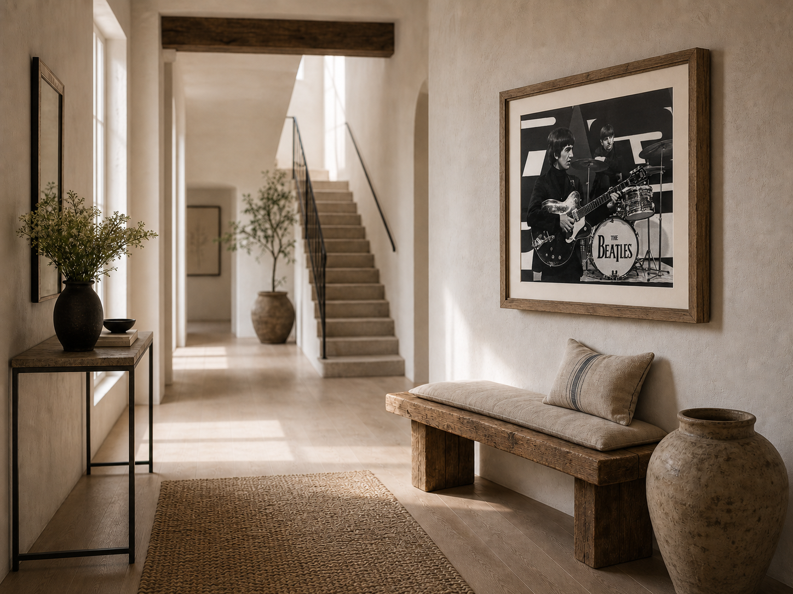
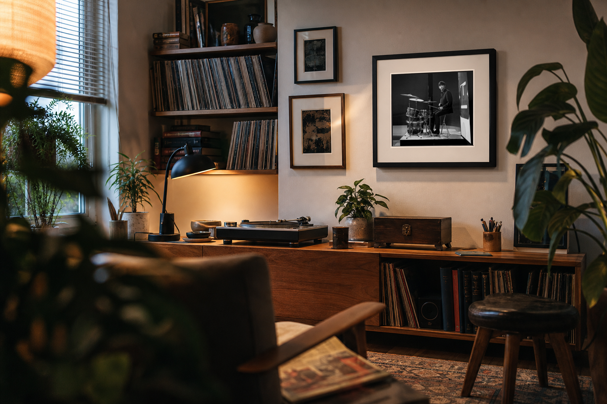
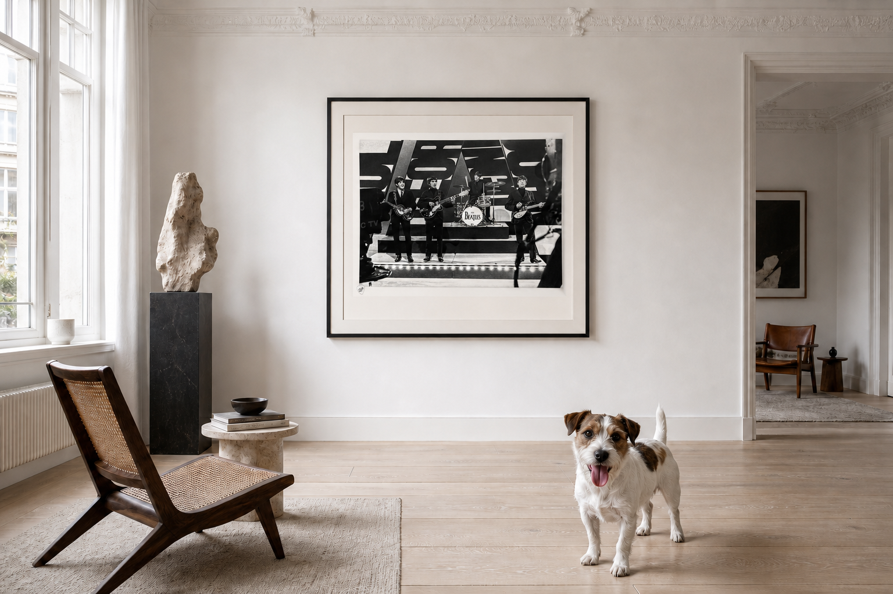

George and Ringo — hallway
The closer crop keeps the hallway, stairs and bench, while allowing the framed photograph to take visual priority.


Ringo Starr — listening room
The tighter option makes Ringo and the drum kit legible at a glance while retaining the records, turntable, smaller frames and warm room atmosphere.



The Beatles — white room and dog
The closer crop cuts into the chair, reduces the ceiling and brings the dog and the Beatles print forward without losing the room.
